CS61B 第 6 讲：双向链表与数组（DLLists, Arrays）
本电子书信息 - 来源视频：【数据结构与算法 CS61B 2021】伯克利大学—中英字幕 p05 6_DLLists, Arrays - 课程讲义：Hug61B · 2.3 The DLList 与 2.4 Arrays - 讲义版权：本课程全部材料由 Josh Hug（UC Berkeley CS61B）以 Creative Commons 4.0 BY-NC-SA 许可发布——可自由分享、演绎，但须署名 Josh Hug、以相同许可共享，且不得商用。 - 本书由课堂录像字幕重构而成，术语以官方讲义为准；文中示意图为官方讲义原图，演示过程图截取自视频。
本讲分两部分：先完成链表的最后两次改进（把单向链表 SLList 升级为双向链表 DLList，并引入泛型），再学习数组的基础知识——这是下一讲构建基于数组的列表 AList 的铺垫。
第一部分：从 SLList 到 DLList
一、addLast 太慢了
上一讲的 addLast 是这样的：
public void addLast(int x) {
size += 1;
IntNode p = sentinel;
while (p.next != null) p = p.next; // 从头走到尾
p.next = new IntNode(x, null);
}
它的瓶颈和当年 size 一样：每次都要遍历整个列表。既然我们当年靠"缓存 size"解决了 size，自然会想到：加一个 last 指针缓存尾部。
public class SLList {
private IntNode sentinel;
private IntNode last;
private int size;
public void addLast(int x) {
last.next = new IntNode(x, null);
last = last.next;
size += 1;
}
}
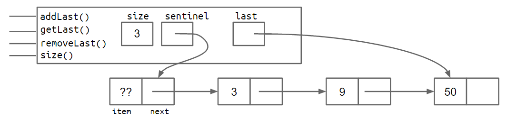
加了 last 后，addLast 和 getLast 都变快了，但 removeLast 仍然慢。
二、removeLast 的难题
要删除最后一个节点，必须先把倒数第二个节点的 next 设为 null，再让 last 指向它。问题是：单向链表里，从 last 无法反向找到前驱，只能从头再遍历一遍。
那再加一个 secondToLast 指针？——没用，因为删完它之后，你又需要"倒数第三"来更新它……如此无穷倒退（用归纳法一步步推就知道，靠"多缓存一个指针"这条路走不通）。
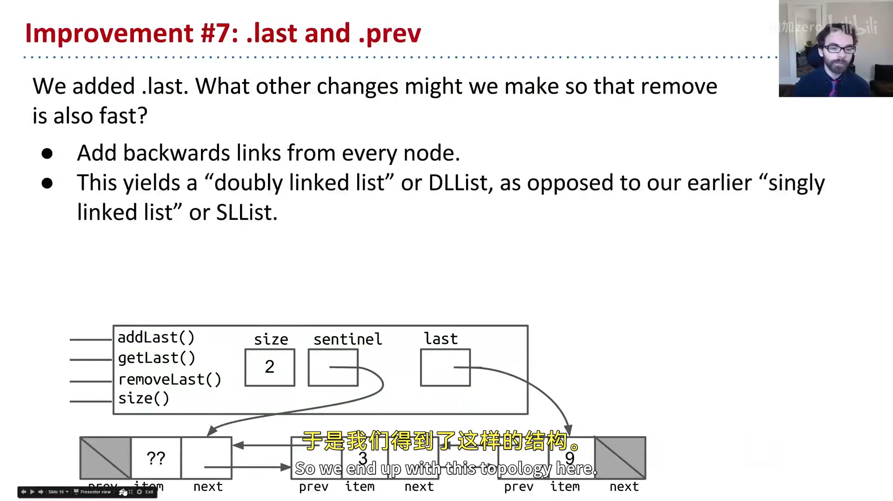
📷 双向链表：每个节点有 prev 和 next
回到原视频 (00:04:31)
三、改进七：回头看（双向链表）
最自然的解法是让每个节点多一个指向前驱的 prev 指针：
public class IntNode {
public IntNode prev;
public int item;
public IntNode next;
}
每个节点有两个链接，这种结构叫双向链表（Doubly Linked List），简称 DLList；相对的，上一讲只有 next 的链表叫单向链表（Singly Linked List），简称 SLList——上一讲那个"别扭的名字 SLList"之谜就此揭晓：S = Singly。
空列表与含两项的 DLList 长这样：
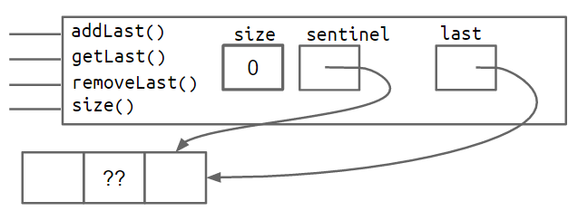
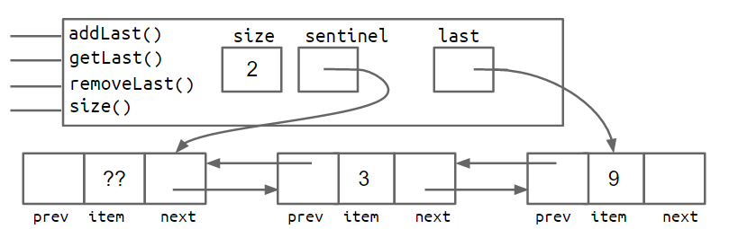
加上 prev 之后，在链表两端做添加、获取、删除都能在常数时间完成；只有"中间"操作仍需遍历。这正是现实世界链表通常采用的形态。（实现细节留到 Project 1 自己动手。）
四、改进八：哨兵升级（双哨兵 vs 循环哨兵）
双向链表有个隐蔽的坑：last 指针有时指向哨兵节点、有时指向真实节点——于是每个方法都要写一堆 if 判断特殊情况，代码又丑又容易错。
方案 A：双哨兵。在链表前后各放一个哨兵，元素永远插在两个哨兵之间：
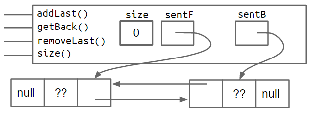
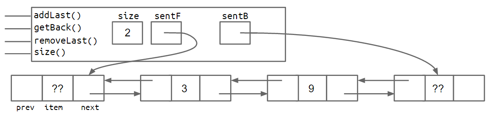
方案 B：循环哨兵。只用一个哨兵，让它既当开头又当结尾——空列表时 sentinel.next == sentinel.prev == sentinel；加元素后，从哨兵出发沿 next 一直走，最终回到哨兵自己。
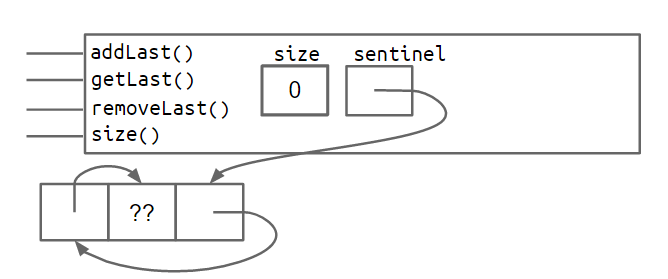
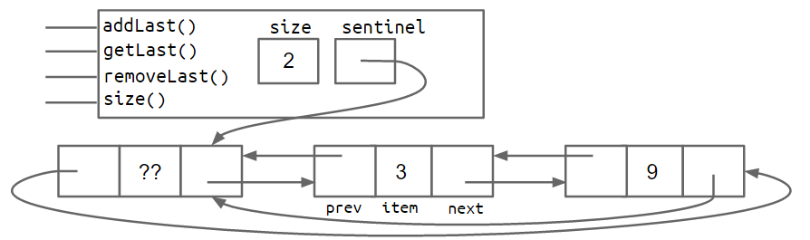
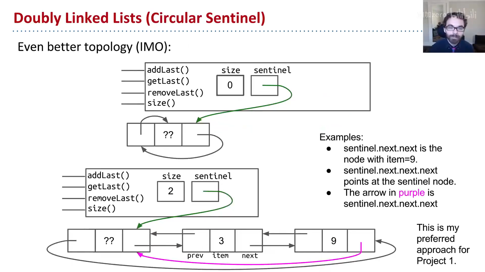
📷 循环哨兵结构
回到原视频 (00:07:09)
两种都能消除特殊情况。Josh 用"山顶寺庙的和尚"作比喻，推荐循环哨兵——它"世界是圆的，一直朝一个方向走会回到起点"，虽然初看更费解，但更纯粹、更美。做 Project 1 时他强烈建议采用。
五、泛型：让列表能装任意类型
DLList 有个致命局限：只能存 int。想存 String 会直接报"String 无法转换为 int"。最糟的解法是复制一个 StringSLList 类到处查找替换——显然不可取。
现代 Java 的正确做法是泛型（generics，2004 年加入）：在类名后加尖括号占位符 <BleepBlorp>（名字随意，GloopGlop、Horse 都行），把 item 的类型换成它：
public class DLList<BleepBlorp> {
public class IntNode {
public IntNode prev;
public BleepBlorp item; // 占位符 = 未来才决定的类型
public IntNode next;
...
}
}
使用时，声明时指定具体类型，实例化时用空尖括号 <>（菱形运算符）：
DLList<String> d2 = new DLList<>("hello");
d2.addLast("world");
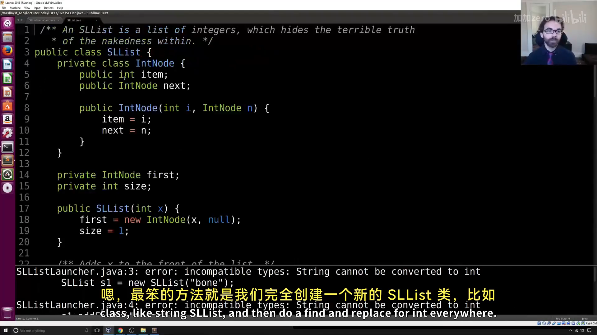
📷 泛型的声明与使用
回到原视频 (00:10:58)
关键规则（Project 1 够用）：
- 在实现数据结构的
.java文件里，泛型类型名只在类名后声明一次； - 在使用数据结构的
.java文件里，声明时指定具体类型，实例化时用空的<>； - 泛型只接受引用类型，基本类型要换成包装类：
int→Integer、double→Double、char→Character等（且首字母大写）。
例如：
DLList<Integer> d1 = new DLList<>(5);
d1.insertFront(10);
到这一步，你就具备了实现 Project 1 LinkedListDeque 所需的全部知识。
第二部分：数组基础
六、数组是什么
我们已能用递归类定义构建可无限增长的列表（IntList、SLList、DLList）。现在换一条正交的思路：用数组来存储信息。
要构建列表，先要能拿到"内存盒子"。之前有两种途径：
int x;→ 32 位的盒子；Walrus w2 = new Walrus(30, 5.6);→ 共 3 个盒子（引用 64 位 + 重量 32 位 + 獠牙 64 位）。
数组（array） 是第三种：一个带编号的内存盒子序列。类是有名字的盒子集合（用 . 访问），数组是有编号的盒子序列（用 [] 访问，如 A[3]）。数组的要素：
- 一个固定的长度
N； N个同类型盒子，编号0到N-1；- 不像类，数组没有方法。
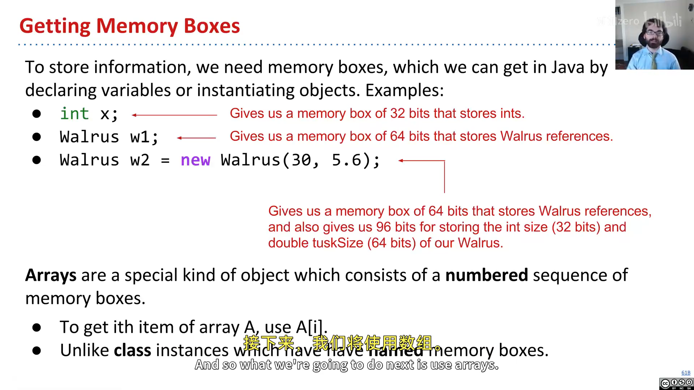
📷 数组：带编号的内存盒子序列
回到原视频 (00:16:52)
七、三种数组创建记法
x = new int[3]; // ① 指定长度，元素填默认值 0
y = new int[]{1, 2, 3, 4, 5}; // ② 指定值，长度自动推断
int[] z = {9, 10, 11, 12, 13}; // ③ 省略 new，只能随声明一起用
三种等价，无优劣之分。① 会得到长度 3、全 0 的数组；②③ 得到长度 5、含指定值的数组。创建数组时元素总会得到默认值（int 为 0，引用类型为 null）。
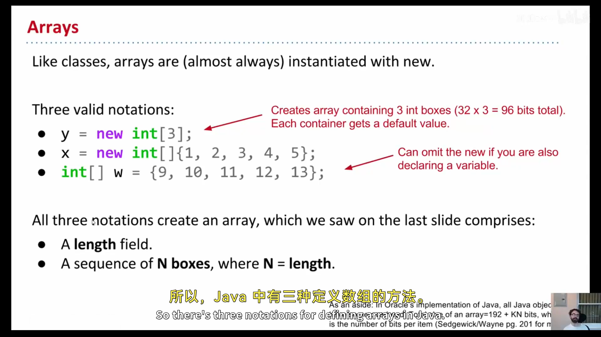
📷 三种数组创建记法
回到原视频 (00:18:59)
八、数组访问、修改与 System.arraycopy
int[] z = null;
int[] x, y;
x = new int[]{1, 2, 3, 4, 5};
y = x; // 复制引用：x、y 指向同一数组
x = new int[]{-1, 2, 5, 4, 99}; // x 换指向，原数组只剩 y 引用
y = new int[3]; // 新数组全 0
z = new int[0]; // 长度 0 的数组
int xL = x.length; // 5
String[] s = new String[6]; // 6 个 64 位盒子，默认 null
s[4] = "ketchup";
s[x[3] - x[1]] = "muffins"; // x[3]-x[1] = 4-2 = 2，即 s[2]
int[] b = {9, 10, 11};
System.arraycopy(b, 0, x, 3, 2); // 从 b[0] 起复制 2 个到 x[3] 起
System.arraycopy 的五个参数依次是：源数组、源起始下标、目标数组、目标起始下标、复制个数。对 Python 老手来说，System.arraycopy(b, 0, x, 3, 2) 等价于 x[3:5] = b[0:2]。
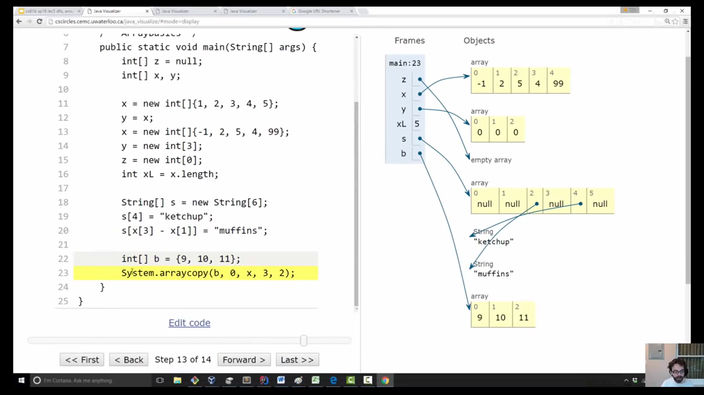
📷 System.arraycopy 演示
回到原视频 (00:27:06)
为什么要复制数组？ 因为 y = x 只是复制引用，两个变量指向同一个数组。若要写一个"非破坏性"的函数（比如把每个元素平方、但不改原数组），就必须真正复制一份。两种复制方式：
// 方式一：手写循环逐项复制
for (int i = 0; i < x.length; i++) y[i] = x[i];
// 方式二：System.arraycopy（通常更快、代码更紧凑，但参数需记忆）
System.arraycopy(x, 0, y, 0, x.length);
arraycopy 通常比循环快（Java 解释器更贴近硬件），代码也更紧凑；代价是可读性略差，取舍由你。
边界检查：Java 数组只在运行时做边界检查——下面这段能编译通过，但运行时会崩溃（
ArrayIndexOutOfBoundsException）：
int[] x = {9, 10, 11, 12, 13};
int[] y = new int[2];
int i = 0;
while (i < x.length) { y[i] = x[i]; i += 1; } // y[2] 越界！
九、二维数组：引用的引用
Java 里所谓的"二维数组"其实是数组的数组。int[][] bamboozle = new int[4][] 创建的是 4 个盒子，每个盒子都能指向一个 int[]（长度未定）。
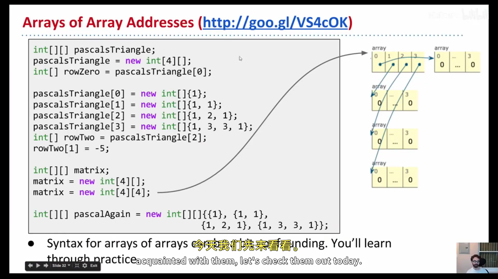
📷 二维数组：数组引用的数组
回到原视频 (00:30:06)
用帕斯卡三角举例：
int[][] pascalsTriangle;
pascalsTriangle = new int[4][]; // 4 个引用盒子，默认 null
pascalsTriangle[0] = new int[]{1};
pascalsTriangle[1] = new int[]{1, 1};
pascalsTriangle[2] = new int[]{1, 2, 1};
pascalsTriangle[3] = new int[]{1, 3, 3, 1};
int[] rowTwo = pascalsTriangle[2]; // 复制引用，指向同一行
rowTwo[1] = -5; // 会影响 pascalsTriangle[2][1]！
int[][] matrix = new int[4][4]; // 第二种：直接创建 4×4 的矩形数组
int[][] pascalAgain = new int[][]{{1}, {1, 1}, {1, 2, 1}, {1, 3, 3, 1}}; // 字面量
关键理解：new int[4][] 只创建 1 个数组（引用数组）；而 new int[4][4] 实际创建 5 个数组（1 个引用数组 + 4 个 int 数组）。rowTwo 和 pascalsTriangle[2] 是同一个数组的两个引用，改一个会影响另一个。
十、数组 vs 类
两者都能组织一堆内存盒子，但哲学不同：
| 类（如 Planet） | 数组 | |
|---|---|---|
| 盒子命名 | 有名字（name、mass） |
编号 0..N-1 |
| 访问方式 | 点表示法 p.mass |
方括号 a[i] |
| 盒子类型 | 可以不同 | 必须相同 |
| 数量 | 固定 | 固定（但长度是运行时值） |
最深刻的区别：数组的索引可以在运行时计算——用户输入几，就取 a[几]；而类的字段名是编译期写死的，你不能 p[某个字符串] 那样动态取字段（Java 里这会报错；想强行做只能靠"反射 API"，但那是公认的糟糕风格）。这个限制反而是 Java 的一大优点：它刻意收敛了你能做的选择，让大型程序的代码保持简单可预期。
小结
本讲完成了链表的最终进化（SLList → 双向 DLList → 泛型化），并打好数组基础。下一讲，我们将用数组构建 AList，并比较它与 SLList 的优劣。
附：官方参考与延伸阅读
- 本讲讲义一（The DLList）：https://joshhug.gitbooks.io/hug61b/content/chap2/chap23.html
- 本讲讲义二（Arrays）：https://joshhug.gitbooks.io/hug61b/content/chap2/chap24.html
- Project 1（LinkedListDeque）：https://sp19.datastructur.es/materials/proj/proj1a/proj1a
- 数组创建可视化：http://pythontutor.com/iframe-embed.html
- 数组访问可视化：https://goo.gl/bertuh
- 二维数组可视化：http://goo.gl/VS4cOK
- 练习 2.4.1 可视化：http://goo.gl/fCZ9Dr
- Java 反射 API（仅作了解，不推荐用于取字段）：Oracle 官方文档
版权与许可：本电子书中的课堂讲解内容重构自 Josh Hug（UC Berkeley）CS61B 课程录像；课程全部材料依据 Creative Commons 4.0 BY-NC-SA 许可发布。请在使用时署名 Josh Hug、以相同许可共享，且不得用于商业用途。书中示意图来自官方讲义原图，演示过程截图来自原视频，相应权利归原作者与视频权利人所有。